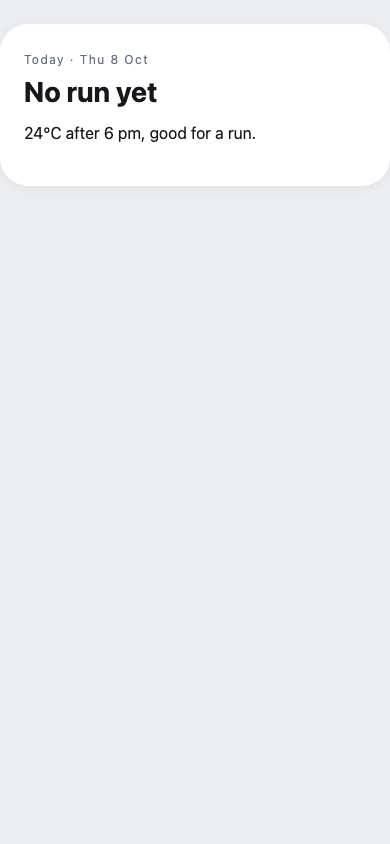
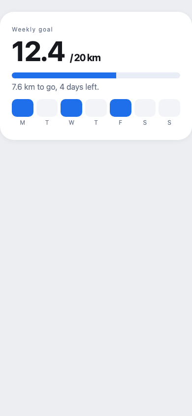
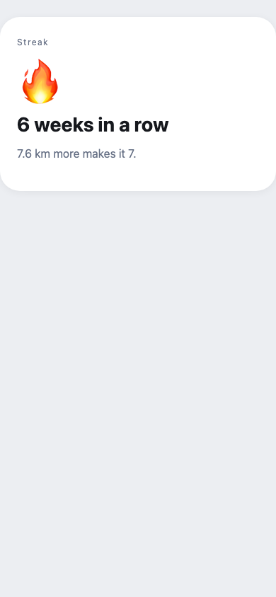
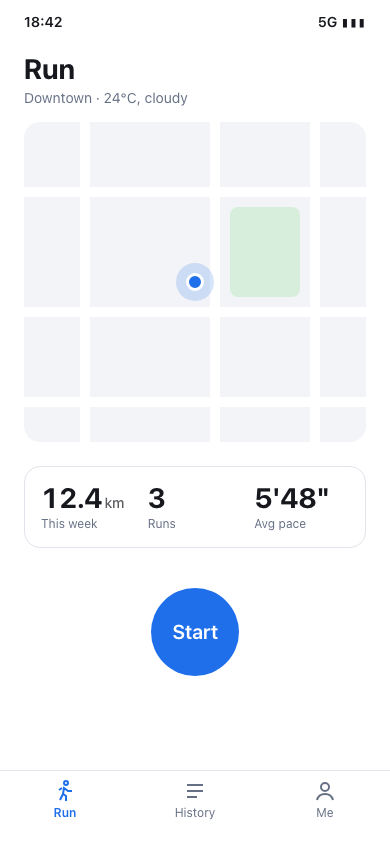
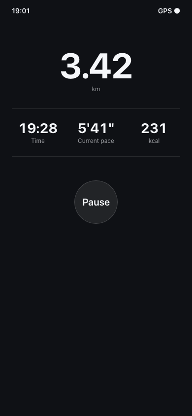
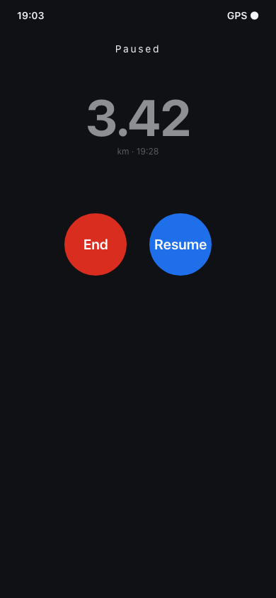
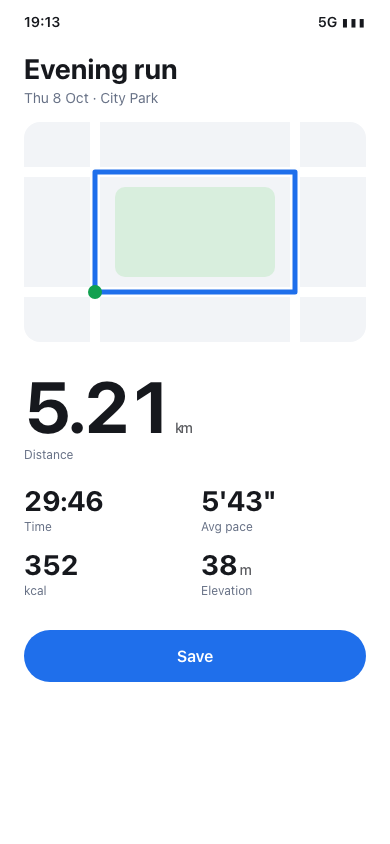
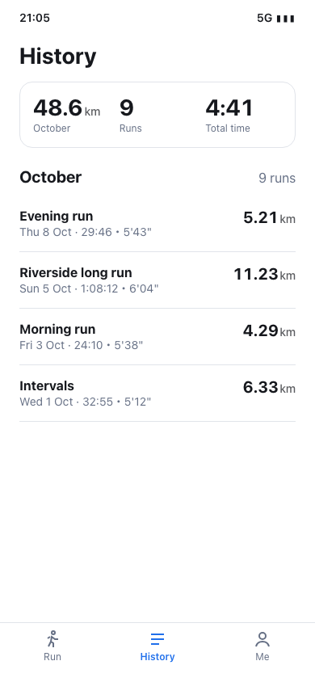

Three tabs. Every screen is a step in a flow or a section of a concept.
What a runner sees on a day they have not run yet. One concept page with a section per idea; nothing here is developer-ready.



Start → active → paused → summary. The runner taps Start, can pause and resume, and ends the run from the paused screen.




Past runs, newest first. Tapping a run should open its detail, which has no page yet.
